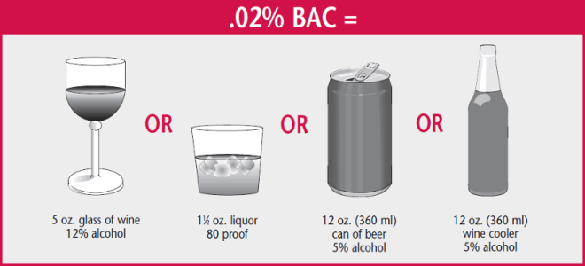

Do you know how much you can drink before you drive?
Take this 10 question quiz to see how much you know about drinking responsibly. You may think you are already responsible and don't need to test your knowledge but you would be surprised. Thousands of people die each year in the United States because of drunk driving. Thousands of lives that could have been prevented through proper education on driving while intoxicated. Take the test and see how much you know!
How many drinks does it take to raise your BAC by 0.02%?

Credit: New York State Department of Motor Vehicle
1.) Drinking alcohol and driving is:
a) A minor traffic safety problem
b) A serious traffic safety problemCORRECT
c) Safe if you only have a few drinks
d) Only dangerous to the driver who drinks
2.) Which of the following does not happen after drinking?
a) Your reflexes and reaction time slow down
b) Your judgment of speed and distance is distorted
c) You are less alert
d) You calm down so you can concentrateCORRECT
3.) Your blood alcohol content (BAC) depends on:
a) the type of beverage you drinkCORRECT
b) how fit you are
c) or how you can hold your liquor
d) the amount of alcohol you consume
4.) What does your BAC have to be in NYC to be considered legal evidence that you are impaired?
a) .05
b) .08CORRECT
c) .18
d) .70
5.) What does your BAC have to be in NYC is considered to be evidence of intoxication?
a) .05
b) .50
c) .18CORRECT
d) .75
6.) What does your BAC have to be in NYC is considered aggravated driving while intoxicated?
a) .05
b) .50
c) .18
d) .75CORRECT
7.) What is the only effective way to reduce your blood alcohol content (BAC)?
a) Drinking coffee
b) Exercising
c) Allow your body time to get rid of alcoholCORRECT
d) Taking a cold shower
8.) What are the consequences that can result from driving under the influence of alcohol or other drugs?
a) Possible imprisonment
b) A mandatory fine
c) Driver license revocation
d) All of these choicesCORRECT
9.) Blood alcohol content (BAC) depends on each of the following except:
a) Your body weight
b) How much you drink
c) How much time passes between drinks
d) How physically fit you areCORRECT
10.) What effect might alcohol and another drug have when combined in your blood?
a) Increase the effects of bothCORRECT
b) Have no effect on driving ability
c) Reduce the effects of the drug or medicine
d) Reduce the effects of the alcohol